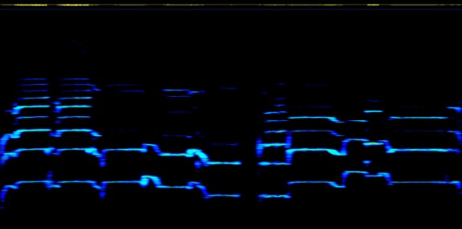
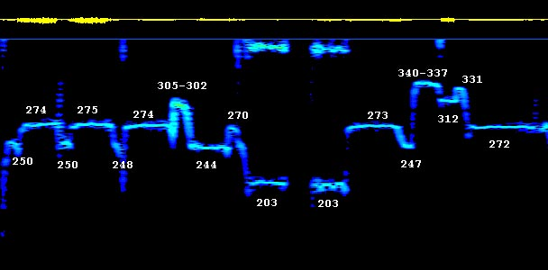

from "Tuva: Voices From the Center of Asia" Smithsonian Folkways CD SF 40017
This discussion will focus on the first complete two-part phrase of the song, which is repeated identically four times during the track. Here is a Real Audio file of the phrase in question. The first spectrogram is taken from the soundfile you will hear.
The first spectrogram covers from 100 to 11025 cps in the vertical dimension (y axis), and the horizontal (x) axis shows time. The lowest trace is the fundamental of the sung notes, and the upper traces are the higher partials in the singers voice. Color shows intensity of energy at a given frequency. Notice that the second, third and sometimes fifth partial is stronger than the fundamental in many notes. Although this song does not feature the kind of harmonic singing that the Tuvans specialize in (where the fundamental is actually supressed and the selected upper partial projected), the singer is a master of harmonic singing and so his voice seems to naturally divert more energy to the upper partials. Nevertheless, for the purposes of examining the intonation, we need only consider the fundamental.

The next spectrogram is a close up of the trace of the fundamental only. I have superimposed rough frequency numbers at the actual notes. A spectrogram of an unaccompanied voice is never static. You might think it would be a simple thing to determine the frequency of each sung note and find the tuning that is being used. However, a sung note is a living thing that changes and breathes and it is not so easy to say exactly what the fundamental frequency is. Notice that the "tonic" or "1/1" of this phrase appears at several slightly different frequencies. I do not think that anyone would claim that the frequencies 274, 275, 273, 272 and even 270 are different notes. They are evocations of a single tonic, and the slight downward drift across the phrase does not lessen the effect.

There is also a clear 4/3 below this tonic at 203 cps. Between these two notes is a kind of lower neighbor to the tonic, appearing at 244, 247/248 and 250. This note occurs five times, just as many as the tonic, so it is an important component of whatever systema is being used here. What is the interval between this note and the tonic? If we take the tonic as 273 and the neighbor note as 247, then this is a 173.27 cent interval that can also be written as 21/19. If however we take the interval from the 275 tonic to 250, then we have a 165 cent ratio (11/10). The difference of 8 cents is small but not imperceptible. Again, if we choose the 274 tonic and a 248 neighbor, the interval is 172.6 cents, or 21/19. Can one conclude from this that an 11 limit or 19 limit ratio is intended? 10/9 is 182.4 cents, too far away to be intended, and there is nothing else in the vicinity.
Tuvan melodies that are sung as projected upper partials basically use the stretch of the overtone series from 6 to 12 or so. Therefore an experienced harmonic singer like Sundukai would certainly be familiar with the sound of the interval between the 10th and 11th harmonic. It is not really surprising that such an interval would turn up in a melody.
In the first part of the phrase, there is an ascent to a note that begins at around 305 cps but dips to 302 cps or so by its end. This is coming from a fairly stable 274 cps tone, so the interval jumped is 185.56 cents (49/44), which is then gradually detuned to 168.45 cps (43/39). Since 10/9 is 182.4 cents, it might be that this is the intended interval initially, and it drops very close to the 11/10 at 165 cents. In later verses the smaller interval is favored. One might be tempted to call this a otonal version of the utonal lower neighbor 11/10 (or visa versa).
In the second part of the phrase there is a leap to a note that sounds very striking when you hear it, but it turns out to be, at 340 cps an exact 5/4 with the 272 cps tonic. The reason for its peculiar effect is that it is not approached from the tonic, but from the lower neighbor, weighing in here at 247 cps. As such, the leap of 553.22 cents is suspiciously close to 11/8 (551.3 cents), another interval possibly derived from the Tuvans' overtone palate.
And what of the following two notes? The note at 312 cps actually lowers to 310 cps by its end. 311 cps makes an almost perfect 8/7 with the 272 cps that it is being approached from above, and I hear this as a second scale step to go with the 5/4. The next note at 331 is perhaps a badly placed third scale degree here that didn't quite make it to 340 cps. In subsequent verses repetitions of the note are closer to reproducing the 5/4.
To sum up: The song has a definite tonal center, which is emphasized by using a note 4/3 below it. In addition there is a lower neighbor to the tonic which may or may not represent 11/10. Above the tonic is another possible 11/10 and a clear 5/4 which descends back to the tonic by way of an 8/7.
At the very least this song exhibits just intonation, and it may even be tuned to intervals taken from the part of the overtone series that is used in Tuvan harmonic singing.